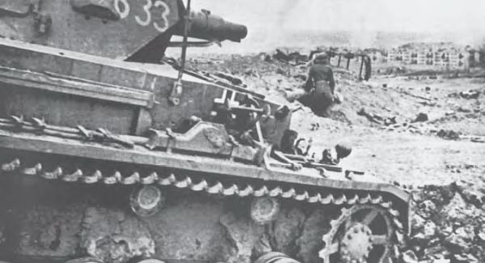

Der südlichste Eckpfeiler der deutschen Ostfront auf der Krim mußte im Winter 1941/42, ebenso wie alle anderen Frontabschnitte, angesichts der barbarischen Kälte und der Offensive sowjetischer Armeen schwerste Kämpfe und Verluste hinnehmen. Die hier stehenden Truppen der deutschen 11. Armee (OB: Generaloberst von Manstein) konnte zwar die gewaltigen Angriffe der 44. und 51. Stoßarmee stoppen, waren aber nicht mehr in der Lage, den vom Gegner gebildeten großen Brückenkopf auf der Halbinsel Kertsch einzudrücken.
Nachdem der Frühling auf der Krim eingekehrt war, wurden von beiden Seiten Vorbereitungen getroffen, um die Schlacht auf der Halbinsel Kertsch „so oder so“ zu beenden. Die Frontlinie verlief zirka 12 km ostwärts der Hafenstadt Feodosia von Süd nach Nord, bog 10 Kilometer westlich Arma-Eli nach Westen ab, um schließlich in einem Bogen die Nordküste von Kertsch zu erreichen. Die sowjetischen Armeen verfügten über 17 Schützen- und zwei Kavalleriedivisionen, drei Schützen- und vier Panzerbrigaden. Die deutsche 11. Armee gliederte sich von Süd nach Nord wie folgt:
XXX. AK (Generalleutnant Fretter-Pico)
132. ID (Generalmajor Lindemann)
28. ID (Generalleutnant Sinnhuber)
22. PD (Generalmajor von Apell)
50. ID (Generalmajor Schmidt, Fr.)
XXXXII. AK (General der Infanterie Mattenklott)
46. ID (Generalmajor Haccius)
7. rumänische Division
170. ID (Generalleutnant Sander)
Das bewährte VIII. Fliegerkorps unter Generaloberst Freiherr von Richthofen war auf Zusammenarbeit mit der 11. Armee angewiesen und sollte besonders mit seinen Stuka- und Schlachtfliegerverbänden den Vormarsch des Heeres unterstützen.
Die Gliederung der deutschen Truppen ließ erkennen, daß der Schwerpunkt des bevorstehenden Angriffs – der den Decknamen Unternehmen „Trappenjagd“ trug – im südlichen Frontabschnitt erfolgen sollte.
Die Verbände des VIII. Fliegerkorps eröffneten am frühen Morgen des 8. Mai 1942 die Offensive; es war die erste, die das deutsche Heer nach den verlustreichen Kämpfen des letzten Winters begann.
Die 28. und 132. ID (Infanteriedivision) drangen bereits in den ersten Angriffsstunden frontal in die russischen Gräben ein. Gleichzeitig waren Sturmpioniere mit Landungsbooten an der Küste gelandet, um die russischen Linien von rückwärts her aufzurollen. Die Sowjets wehrten sich erbittert. Die deutschen Regimenter gewannen langsam die Oberhand und hatten bis zum Abend die sowjetische Front aufgebrochen. Die 22. PD (Panzerdivision) wurde nun in der Nacht in diese Lücke geschoben. Im Morgengrauen des zweiten Schlachttages rollten die Panzer an. Sie nahmen Richtung nach Nordosten und drängten den Gegner auf Arma-Eli zurück.
Schon begann die sowjetische Front zu zerreißen – da schlug in diesem Augenblick das Wetter um. Der Himmel öffnete sich, und starker Regen verwandelte das Gelände in wenigen Stunden in einen gewaltigen Schlammpfuhl. Die Bewegungen der Panzer, Kradschützen und Batterien kamen zum Erliegen. Das Armeeoberkommando drang darauf, daß der glücklich angelaufene Angriff unbedingt in Fluß gehalten werden sollte. Die motorisierten Abteilungen wurden zusammengezogen, um die wenigen festen Straßen zu benützen. Die Infanterie selbst sollte sich abseits davon nach vorn durchkämpfen.
Die 22. PD blieb trotz der ungünstigen Wetterlage im zügigen Vorgehen, drehte westlich von Arma-Eli nach Norden ein und brach in einem kühnen Stoß bis zur Küste durch. Dadurch wurde der Befehl des sowjetischen Oberkommandos illusorisch, der am ersten Tag lautete: „Halten um jeden Preis!“
Jetzt waren die russischen Kräfte vor dem deutschen Nordabschnitt in Gefahr, eingekesselt zu werden. Gleichzeitig hatte nämlich der Angriff des XXXXII. Armeekorps Boden gewonnen, um die sowjetische Front auch frontal zum Einsturz zu bringen.
Das Schicksal hatte bereits gegen die 51. Sowjetarmee entschieden. Die Panzerbrigade der 22. PD unter Oberst von Groddeck erreichte am 11. Mai die Küste zwischen Ak-Monaj und Sem-Kolodesej. Damit befanden sich acht Sowjetdivisionen in der Falle. Die erste Phase des Unternehmens „Trappenjagd“ war in drei Tagen beendet. Die Sowjets gaben zwar noch nicht auf, doch jeder Durchbruchsversuch nach Osten brach im Feuer und in Gegenangriffen der Divisionen des XXXXII. Armeekorps zusammen. Generaloberst von Manstein nutzte sofort die günstige Situation aus und gruppierte seine Kräfte zur zweiten Phase der Offensive um. Die 170. ID wurde aus der Front gelöst, hinter dem Rücken der anderen Divisionen vorbei nach Süden gezogen, um hier den Schwerpunkt zu verstärken.
Die zweite Phase des Angriffs begann aus der Bewegung heraus. Die 22. PD drehte von Nord nach Osten ein, gruppierte sich um Arma-Eli und stieß von hier aus weiter vor. Gleichzeitig war die 170. ID dahinter aufmarschiert, um sich dem Angriff anzuschließen. Die sowjetische Führung erkannte die deutschen Bewegungen und traf drakonische Maßnahmen, um die eigene Verteidigungskraft zu vergrößern. Befehle und Aufrufe an Truppen und Zivilbevölkerung forderten zum Widerstand bis zum Letzten auf. Die Dorfbewohner wurden gezwungen, in aller Eile Panzersperren und Stellungen anzulegen. Der einmal begonnene deutsche Angriff konnte aber nicht mehr aufgehalten werden.
Die 22. PD und die 170. ID durchbrachen die sowjetische Front südlich von Arma-Eli und gewannen wider Erwarten schnell Raum nach Osten. Der feindliche Widerstand, der sich besonders an den Ortseingängen und Straßenkreuzungen konzentrierte, konnte im gemeinsamen Angriff von Panzer- und Infanterietruppen sowie durch Stuka- und Schlachtstaffeln rasch bezwungen werden. Die Front der 44. Sowjetarmee begann zu weichen und zu zerbröckeln.
Genau eine Woche nach Beginn der deutschen Offensive war das Schicksal der Sowjets auf der Halbinsel Kertsch besiegelt. Vorausabteilungen der 170. ID standen am 14. Mai am Westrand der Stadt Kertsch. Das Infanterieregiment unter Oberstleutnant Griesbach hatte in einem kühnen Sturmlauf den Tatarengraben überwunden, die Sultanowka-Stellung durchbrochen und die Bahnlinie westlich von Kertsch erreicht.
Damit war ein tiefer Keil in die feindliche Front getrieben. Die sowjetischen Verbände waren getrennt.
Der zweite deutsche Stoßkeil bohrte sich ebenfalls stetig weiter nach Osten vor. Die 22. PD war von Arma-Eli aus nach Südosten durchgebrochen. Die Panzerbrigade Oberst von Groddeck stürmte allen anderen Verbänden voraus. Die Panzerabteilungen brachen zwischen Usuklar und Martowka in die Sultanowka-Stellung ein und stießen von nun an nach Nordosten ebenfalls auf Kertsch vor.
Die Flanken der deutschen Angriffskeile wurden immer länger. Das Armeeoberkommando schob von allen anderen Divisionen rasch Kampfgruppen zur Verstärkung der 170. ID und der 22. PD nach. Die Flanken nach Norden wurden nur notdürftig von der 7. rumänischen Division gesichert, während den Schutz nach Süden eine gemischte rumänische Kavalleriebrigade übernahm.
Mittlerweile war die Schlacht um die Stadt Kertsch entbrannt. Die Sowjets verteidigten sich erbittert und gaben keinen Meter Boden kampflos auf. Es kam zu schweren Häuser- und Straßenkämpfen. Das Infanterieregiment 213, dessen Kommandeur, Oberst Hitzfeld, bereits das Eichenlaub trug, stürmte die beherrschende Höhe von Kertsch. Ein Bataillon des Infanterieregiments 399 konnte nach schwerem Kampf das Hüttenwerk nehmen und stand damit bereits im Nordosten von Kertsch an der Küste. Zum erstenmal wurden hier schwere deutsche Werferbatterien eingesetzt, die mit Flammölmunition die feindlichen Stellungen sturmreif schössen.
Die zurückgehenden Kräfte der 44. und die Reste der bereits zerschlagenen 51. Sowjetarmee ballten sich an der Küste beiderseits von Kertsch. Die Geschwader des VIII. Fliegerkorps stürzten sich auf die zusammengedrängten Truppenteile und richteten eine heillose Verwirrung an. Zwar versuchte die sowjetische Führung, die eigenen Truppen durch Schiffe der „Roten Flotte“ über die Straße von Kertsch zu retten, doch es war bereits zu spät. Die Zange um die Reste der Armeen hatte sich geschlossen. Es gab keinen Ausweg mehr. Die Kampfkraft der Verteidiger ließ seit 16. Mai merklich nach. Die Sowjets kapitulierten.
Die deutsche 11. Armee des Generalobersten von Manstein hatte die Schlacht um die Halbinsel Kertsch gewonnen. Die letzten Feindteile kapitulierten am 20. Mai 1942. Insgesamt zogen 170.000 sowjetische Offiziere und Soldaten in deutsche Kriegsgefangenschaft. Am Strand, auf den Feldern und Straßen der Halbinsel Kertsch lagen oder standen unzählige feindliche Geschütze, Panzer, Maschinengewehre, Pak- und Fla-Geschütze – und noch vieles mehr.
Generaloberst von Manstein gönnte seiner siegreichen Armee keine Ruhepause. Er gruppierte wieder um.
Die Transporte der Divisionen rollten nach Westen – Sewastopol entgegen ...
W. Haupt

Deutsche Stellungen im Süden Rußlands